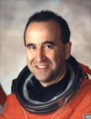

Lyndon B. Johnson Space Center
Houston, Texas 77058
|
National Aeronautics and Space Administration Lyndon B. Johnson Space Center Houston, Texas 77058 |
 |
Biographical Data |
||
Fernando (Frank) Caldeiro
NASA astronaut (DECEASED)
PERSONAL DATA: Born June 12, 1958 in Buenos Aires, Argentina, but considered New York City and Merritt Island, Florida, to be his hometowns. He died on October 3, 2009 following a 2-1/2 year battle with a brain tumor. He is survived by his wife, the former Donna Marie Emero of Huntington Beach, California, and two daughters.
EDUCATION: Graduated from W.C. Bryant High School, Long Island City, New York, in 1976; received an associate degree in applied science in Aerospace Technology from the State University of New York at Farmingdale in 1978, a bachelor of science degree in mechanical engineering from the University of Arizona in 1984, and a master of science degree in engineering management from the University of Central Florida in 1995.
ORGANIZATIONS: Experimental Aircraft Association, Aircraft Owners and Pilots Association.
AWARDS: Kennedy Space Center (KSC) Technical Leadership Certificate; Rockwell International Corp. Certificate of Commendation; Group Achievement Awards (9); KSC Center Director Round Table Award; KSC Superior Performance Awards (2); KSC Public Affairs Certificate of Appreciation for Service. University of Central Florida Distinguished Alummni, 2001 Tampa’s Museum of Science and Industry Hispanic Scientist of the Year. Appointed in 2002 by President G. W. Bush to serve in the President’s Advisory Commission on Educational Excellence for Hispanic Americans under the President’s “No Child Left Behind Act”.
EXPERIENCE: From 1985-1988, Caldeiro worked as a test director during the production and flight test of the Rockwell/USAF B-1B Bomber. In that capacity he was involved in the checkout and delivery of all 100 aircraft. In 1988, he was transferred by Rockwell International to the Kennedy Space Center as a space shuttle main propulsion system specialist. In this capacity he was the Rockwell International design center representative for the ground processing and launch of the Orbiter Discovery.
NASA EXPERIENCE: He was hired by NASA KSC in 1991 as a cryogenics and propulsion systems expert for the safety and mission assurance office. He was also tasked by KSC management to undertake several special assignments where he served as the Executive Staff Assistant to the Director of Safety, Reliablity and Quality Assurance. He actively participated in 52 space shuttle launches during his eight year tenure at KSC.
Selected by NASA as an astronaut candidate in April 1996, Caldeiro reported to the Johnson Space Center in August 1996. He was qualified for flight assignment as a mission specialist after completing the prescribed two years of training and evaluation. In 1997 he was assigned to the Astronaut Office Station Operations Branch, where he served as lead astronaut of the ISS Environmental Controls and Life Support Systems and the European-built station modules. In that capacity he was involved in all aspects of design and manufacturing reviews for the MPLM, Node 2, Columbus Module and Cupola as well as equipment fit checks. Duties included support for the development of flight and maintenance procedures. From June 2005 to December 2006 Caldeiro served as the lead astronaut in charge of Shuttle software testing at the Shuttle Avionics Integration Laboratory. Duties included design, special testing, and verification of in-flight maintenance procedures. In January 2006 Caldeiro was reassigned to the WB-57 High Altitude Research Program at Flight Crew Operations, Aircraft Operations Division (AOD) at Ellington Field where he directed the integration and operation of high altitude atmospheric research experiments carried onboard the NASA WB-57 aircraft.
OCTOBER 2009
{kind=link}